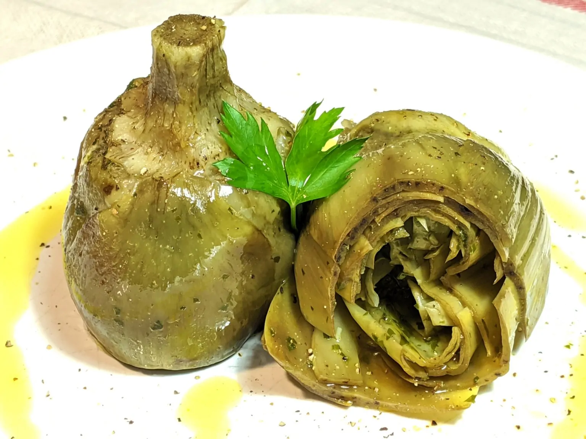
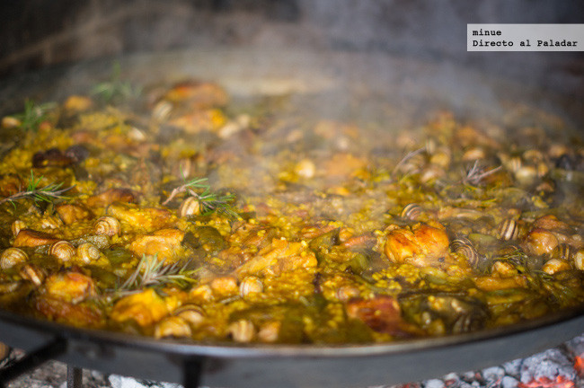

Alcachofas a la romana
- Pais:Italia Ciudad:Roma
-
Descripción:
En la cocina tradicional romana la alcachofa está en el podio de las verduras más usadas, especialmente la de la variedad mammola o carciofo romanesco. Son enormes, y de hojas tiernas y se puede aprovechar más cantidad de flor que en las que tenemos por aquí. Es casi imposible comer en Roma, especialmente en el Ghetto, y no probar alcachofas a la romana o a la judía, como entrante o acompañamiento
Imagen:

- Ingredientes para 2 personas
- 4 alcachofas
- 1 diente Ajo
- 1 ramito Perejil
- 6 hojas Menta
- Sal
- Pimienta negra
- Aceite de oliva
- Elaboracion:
Picar la menta, perejil y diente de ajo
Preparar el aliño mezclando el perejil, la menta, el ajo, una pizca de sal, pimienta y aceite de oliva
Pelar las alcachofas, retirando las hojas más duras. Si no es fresca de temporada, puede que en el corazón tenga un poco de pelusa leñosa, que también se deberetirar. Si no se usan las alcachofas inmediatamente, sumergirlas en agua fría con un chorro de zumo de limón para evitar que se oxiden, pero algo del sabor del limon quedará. Atención: Pelar alcachofas deja las manos un poco marrones. Si queréis evitarlo, usad guantes de plástico
Untar el interior de las alcachofas con el aliño
Meter las alcachofas en un cazo con la parte del tallo hacia arriba. Deben quedar lo suficientemente estrechas entre sí como para que aguanten toda la cocciónen esta posición
Llenar el cazo con agua hasta casi cubrir las alcachofas, añadir un chorrito de aceite de oliva y un poco de sal
Tapar el cazo y cocinar las alcachofas a fuego muy lento durante unos 35 minutos o hasta que al pincharlas estén completamente tiernas
- Web Si quieres visitar la pagina web donde hemos cogido la información pinche aquí
- Tiempo climático en Roma

- CONTACTA CON NOSOTROS
- Dirección: Av Constitucion 192, Granada
- teléfono: 600342313
- Creador: Adrián Sánchez Nieto
Paella Valenciana
- Pais:España Ciudad:Valencia
-
Descripción:
Plato estrella de nuestra cocina junto a la tortilla de patatas o el gazpacho, la realidad es que no somos exclusivistas en el uso del arroz, pues otras grandes recetas del mundo también hacen de él su bandera como es el jambalaya o el risotto, ni tampoco quedarnos en exclusiva con el azafrán.
Imagen:

- Ingredientes para 12 personas
- Arroz bomba............1500 g
- Pollo de corra............1
- Medio conejo
- Judía verde plana.......500g
- Garrofó.................500g
- Alcachofa (opcional)......6g
- Aceite de oliva virgen extra
- Pimentón dulce
- Tomate triturado
- Azafrán
- Romero fresco
- Sal
- Elaboracion:
Vierte el aceite sobre la paella y enciende el fuego. Una vez el aceite esté caliente, añade el conejo y el pollo y sofríelos hasta que adquieran un color dorado.
Recuerda darle vueltas a las piezas de carne para que se hagan uniformemente. A continuación, echa las verduras y rehógalas.
Ahora vierte el tomate rallado y sofríelo del mismo modo, removiendo constantemente.
Ahora es el turno del pimentón. Añádelo y remuévelo apenas un instante, enseguida tienes que verter el agua hasta los remaches de la paella para evitar que se queme. Añade el azafrán, el romero y la sal.
Una vez que el agua rompa a hervir, déjala unos 5 minutos en ebullición con fuego vivo. A continuación, baja a fuego medio y déjala cocer entre 20 y 30 minutos. Aviva el fuego y añade el arroz.
La forma tradicional de ponerlo es haciendo una cruz en el agua que está hirviendo y repartirlo de modo uniforme por la superficie del recipiente. Aprovecha ahora para probar y rectificar de sal.
Mantén el fuego fuerte durante unos 10 minutos y reduce el fuego a la mitad durante un tiempo parecido hasta que el arroz quede en su punto de cocción. ¡Buen provecho!
- Web Si quieres visitar la pagina web donde hemos cogido la información pinche aquí
- Tiempo climático en Valencia